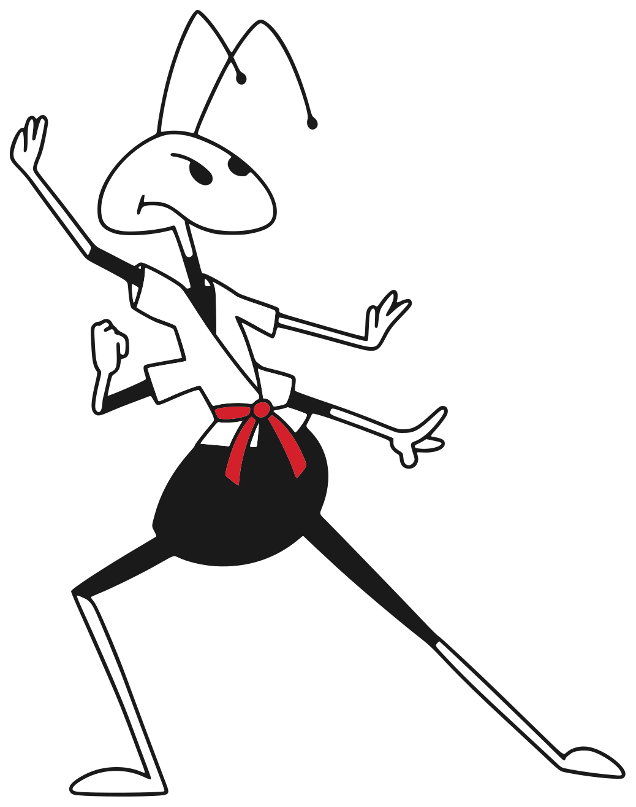

名單比形容詞有用。這裡放的是真的考上的孩子——而且每一個名字，我們都說得出他是怎麼考上的。
榜單原註：版面不足未展示全部榜單
同期學測：新竹高中 劉★瑋 — 錄取 台灣大學 電機系
以上皆為校區實際張貼之榜單，姓名依慣例遮字。
分年級、小班制。所有班別都含：每週評量 → 逐觀念診斷 → LINE 家長報告。
習慣與觀念的地基：數學不怕、作文有話說——小六銜接國中不慌。
★ 小五・小六免費「國中銜接檢測」：上國中前，先知道孩子站在哪
時段：平日 17:00–18:30／週六上午
校區：頭份班・竹南班
三十年主力。分年級開班，每題標記觀念、每週診斷報告。
★ 國三會考總複習班：五科逐觀念診斷，弱點一類一類收服
時段：平日晚間 19:00–21:30／國三加週六全日
校區：頭份班・竹南班・新竹班
各年段皆可單科報名；入班前先做免費觀念檢測，依檢測結果安排。自習座位開放至 22:00。
檢定班、遊學團這類需要另外報名的班別。名額與報名截止都寫在下面；常態班不列在這裡，各年段常年招生。
我們把每一題都標記到它考的觀念——所以看的不是分數，是哪個觀念還沒通。補的不是「題」，是「觀念的洞」。
每次測驗逐題對回觀念——不是「數學不好」，而是「相似形還沒懂」。
針對未精熟的觀念補洞，從根本弄懂，不用題海淹沒孩子。
把每一類題型練到精熟——精熟每一類，會考自然高分。
「三十年，每一年的榜單都掛在牆上——而且我們說得出每一分成果怎麼教出來的。孩子進來之後，您每一週都看得見他的進步：哪裡懂了、哪裡還要加強，清清楚楚。」
三十年只做一件事：把每一種題型教到孩子從根本弄懂。
先問孩子卡在哪一步，再決定要補哪個觀念。
把難題拆成看得懂的步驟——孩子自己講得出來，才算會。
我們在一個工作天內回電，檢測時間依您方便安排；前兩步完全免費，看完報告再決定。
告訴我們孩子的年級與想加強的科目，約檢測時間。
免費孩子做一份診斷卷＋上一堂課——當天拿到「觀念診斷報告」，強弱項一目了然。
免費依程度與缺口安排班別與座位；插班生會先補齊落後的觀念。
孩子做一份依年級出的診斷卷（約 30–40 分鐘），我們逐題對回觀念，當天給您一份「觀念診斷報告」：哪些觀念穩了、哪些還有洞。完全免費、不綁報名，報告直接帶回家；孩子不用準備，帶著來就好。
可以。所有班別均可單科報名；檢測後若發現其他科有明顯的觀念缺口，我們會如實告訴您，但不強迫加科。
入班前的免費觀念檢測就是為此設計：先找出落後的觀念，入班後由老師針對缺口補課，跟上進度再併入正常軌道。
每週您會在 LINE 收到逐觀念精熟報告：哪個觀念從「待加強」變「精熟」、哪個還在路上，一張圖看懂——不用等段考成績單。
依年級與科目數計費，單科與全科方案不同。請加 LINE 或來電，我們依孩子的需求報價；檢測與試聽一律免費。
有。學生可使用自習座位至晚間 22:00，非上課日也開放，有老師輪值可以問問題。
免費觀念檢測＋試聽一堂課——當天帶走孩子的診斷報告，看見強弱項再決定。名額依班別安排，建議先預約。
